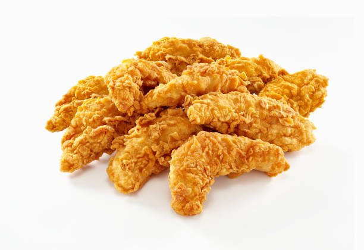

Healthy Chicken Tenders Recipe

https://www.instagram.com/p/CrJK2hJLoms/
Description
These Chicken Tenders have 168g protein for the entire plate with only 31g carbs making it a cheat code for your diet! 💪🐓
Macros for the entire recipe: 960 calories, 16g fat, 31g carbs, 168g protein.
Ingredients
- 3 bags protein chips (95g)
- 1 tbsp ranch powder (10g)
- 1 tsp paprika, chili powder, garlic powder, onion powder, & salt
- 1/2 tsp pepper
- 2 egg whites
- 16oz chicken tenderloins (455g)
Steps To Prepare
- Add protein chips to bowl and crush with hands (in this recipe I used ranch chips, but you can get creative with the flavor).
- Add ranch powder, paprika, chili powder, garlic powder, onion powder, salt and pepper to bowl and whisk.
- In a second bowl, add egg whites.
- Dip chicken tenderloins in egg whites, then coat in protein chip mixture. Set on tray of air fryer and spray with olive oil.
- Air fry 400°F (204°C) for 15-17 mins or until chicken reaches internal temperature of 165°F (74°C).